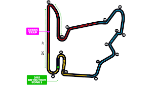

Circuitos
Melbourne
Clique aqui
Albert Park
O Circuito de Albert Park é um circuito de rua localizado em Melbourne, Austrália, que é usado anualmente para sediar o Grande Prêmio da Austrália de Fórmula 1. O circuito tem um comprimento total de 5,3 km e apresenta 16 curvas, com algumas seções rápidas e outras mais lentas. O circuito de Albert Park é considerado um dos mais desafiadores do calendário da Fórmula 1, devido às suas curvas técnicas e à necessidade de equilibrar a velocidade com a aderência dos pneus em uma superfície de rua que pode ser bastante irregular.
Sepang
Clique aqui
Sepang
O circuito de Sepang é corrido no sentido horário. A pista tem como principal característica a sua largura, sendo a pista mais larga de todo o calendário da Fórmula 1 e da MotoGP (largura média de 16 metros). Também apresenta uma boa mistura de curvas de alta, média e baixas velocidades, com duas grandes retas praticamente paralelas unidas por um gancho lento e divididas pelas famosas arquibancadas do circuito, que permitem ver boa parte do circuito.[1] O asfalto é quase um tapete. Utilizando um tipo chamado polimérico, o piso tem aderência e nivelamento acima da média. Em caso de chuva, o processo de drenagem é muito mais rápido que no asfalto comum. O paddock, com escritórios exclusivos para as equipes e uma funcional sala de imprensa, também é considerado o melhor do mundo. Os malaios parecem ter chegado na F-1 para ficar.
Spa-Francorchamps
Clique aqui
Spa-Francorchamps
A corrida de Fórmula 1 na Bélgica é realizada no circuito de Spa-Francorchamps, que é um dos mais icônicos e desafiadores do calendário. O traçado tem 7,004 km de extensão e apresenta uma série de curvas rápidas, subidas e descidas. A pista é conhecida por suas mudanças climáticas imprevisíveis, com chuvas torrenciais em uma parte do circuito enquanto outras áreas permanecem secas. A curva mais famosa do circuito é a Eau Rouge, que é uma curva de alta velocidade em subida que testa a habilidade dos pilotos. A corrida de Fórmula 1 na Bélgica é uma das mais aguardadas do calendário e costuma atrair uma grande multidão de fãs apaixonados.
Shangai
Clique aqui
Shangai
O Circuito Internacional de Shanghai é um circuito de corrida localizado em Jiading, Xangai, China, que recebe o Grande Prêmio da China de Fórmula 1 desde sua inauguração em 2004. O circuito tem um comprimento total de 5,451 km e apresenta 16 curvas, com retas longas e seções técnicas. O Circuito Internacional de Shanghai é conhecido por suas retas longas e seções técnicas, que testam a habilidade e a precisão dos pilotos. O clima também pode ser um fator importante na corrida, pois pode ser bastante frio e úmido em determinadas épocas do ano, o que pode afetar o desempenho dos carros e dos pneus.
Gilles Villeneuve
Clique aqui
Gilles Villeneuve
O Circuito Gilles Villeneuve é uma pista de corrida de Fórmula 1 localizada na Ilha Notre Dame, no coração da cidade de Montreal, no Canadá. É uma pista rápida, com muitas retas e curvas fechadas, e é conhecida por ser exigente tanto para os pilotos quanto para os carros. A pista tem uma extensão de 4,361 km, com 14 curvas, incluindo a famosa chicane final, onde muitas ultrapassagens ocorrem. O Circuito Gilles Villeneuve tem uma atmosfera única e é conhecido por ser uma das corridas mais emocionantes do calendário da Fórmula 1. A corrida é popular entre os fãs, pois oferece uma mistura de ação na pista e uma cidade vibrante para explorar fora dela. É uma corrida icônica e esperada ansiosamente pelos fãs de Fórmula 1 em todo o mundo.
Abu Dabi
Clique aqui
Abu Dabi
O circuito de Abu Dabi é uma das corridas mais emocionantes do calendário da Fórmula 1. Com 5,5 km de extensão, a pista conta com 21 curvas e duas retas principais longas. A corrida é realizada no final da temporada e muitas vezes decide o campeonato mundial de pilotos ou construtores. O destaque da pista é a seção do hotel Yas Viceroy, onde os carros passam sob o prédio em uma estrutura iluminada por LED. Além disso, o circuito de Abu Dabi é um dos mais modernos do mundo, com instalações de última geração e um ambiente luxuoso.
Mônaco
Clique aqui
Monaco
O Circuito de Mônaco é um dos mais icônicos e desafiadores circuitos da Fórmula 1. Localizado em Monte Carlo, Mônaco, é um circuito de rua que é conhecido por ser extremamente estreito, sinuoso e perigoso. Com uma extensão de apenas 3,337 km, o circuito tem 19 curvas, incluindo a famosa curva Sainte-Dévote, a subida íngreme até a curva Beau Rivage e o famoso túnel que leva os carros para a reta final antes da chicane na Rascasse. É um circuito onde a habilidade do piloto é crucial, pois não há muito espaço para ultrapassagens e qualquer erro pode resultar em uma colisão com as barreiras. O Circuito de Mônaco é um dos eventos mais aguardados do calendário da Fórmula 1 e sempre proporciona uma corrida emocionante.
Valência
Clique aqui
Valência
O Circuito Urbano de Valência foi um circuito de rua localizado na cidade de Valência, na Espanha, que sediou o Grande Prêmio da Europa de Fórmula 1 por cinco anos, de 2008 a 2012, na companhia da GP2 Series. A primeira corrida no circuito foi realizada na cidade durante o fim de semana em 23 e 24 de agosto de 2008, com o piloto brasileiro Felipe Massa a vencer o evento principal, o Grande Prêmio da Europa, depois de largar na pole position. O International GT Open e a Fórmula 3 Espanhola também visitaram o circuito neste ano.
Silverstone
Clique aqui
Silverstone
O Circuito de Silverstone é o circuito que sediará o Grande Prêmio da Grã-Bretanha de Fórmula 1 em 2023. Este circuito é um dos mais antigos e históricos da Fórmula 1, com o primeiro Grande Prêmio da Grã-Bretanha sendo realizado lá em 1950. O circuito de Silverstone tem uma extensão de 5.891 km e possui uma combinação de curvas rápidas e lentas, o que o torna um dos mais desafiadores para os pilotos e equipes. Com capacidade para 140 mil espectadores, é um dos maiores eventos de corrida de carros da Grã-Bretanha e é muito aguardado pelos fãs do esporte.
Hockenheim
Clique aqui
Hockenheim
tExistem dois circuitos na Alemanha que já sediaram corridas da Fórmula 1: o Nürburgring e o Hockenheimring. O Nürburgring é considerado um dos circuitos mais desafiadores e emocionantes do mundo, com uma combinação de curvas rápidas e lentas, incluindo a famosa curva Schumacher. Já o Hockenheimring é um circuito mais técnico, com retas longas e curvas lentas e médias. Ambos os circuitos apresentam uma atmosfera vibrante e são muito populares entre os fãs de automobilismo. No entanto, desde 2019, o circuito da Alemanha não tem feito parte do calendário da Fórmula 1, mas espera-se que possa retornar em temporadas futuras.
Catalunha
Clique aqui
Catalunha
O Circuito da Catalunha, também conhecido como Circuito de Barcelona-Catalunha, é uma pista de corrida localizada na cidade de Montmeló, a cerca de 30 quilômetros de Barcelona, na Espanha. Com uma extensão de 4,655 quilômetros, a pista tem 16 curvas e é conhecida por ser um circuito técnico, que exige muito dos pilotos e carros. O circuito sedia o Grande Prêmio da Espanha de Fórmula 1 desde 1991 e também é utilizado para testes de pré-temporada e de desenvolvimento de carros. Além da Fórmula 1, o Circuito da Catalunha também sedia outras categorias do automobilismo, como o Campeonato Mundial de Superbikes e o Campeonato Mundial de GT.
Hungaroring

Clique aqui
Hungaroring
A Fórmula 1 retorna ao Hungaroring em 2023, um circuito localizado a cerca de 20 km a nordeste de Budapeste, na Hungria. O circuito tem 4.381 km de extensão, com 14 curvas, sendo que algumas delas são bastante desafiadoras, como a curva 4, que é uma sequência de curvas em alta velocidade, e a curva 11, uma curva de baixa velocidade. A pista é conhecida por suas curvas sinuosas e estreitas, o que torna difícil para os pilotos ultrapassarem seus adversários. O circuito é considerado um desafio técnico para as equipes, que precisam encontrar o acerto ideal do carro para obter um bom desempenho nas curvas de baixa velocidade, sem perder velocidade nas retas. O GP da Hungria é geralmente disputado em condições de calor intenso, o que torna o desafio ainda maior para os pilotos, que precisam manter o foco em uma corrida muito exigente.
.svg)